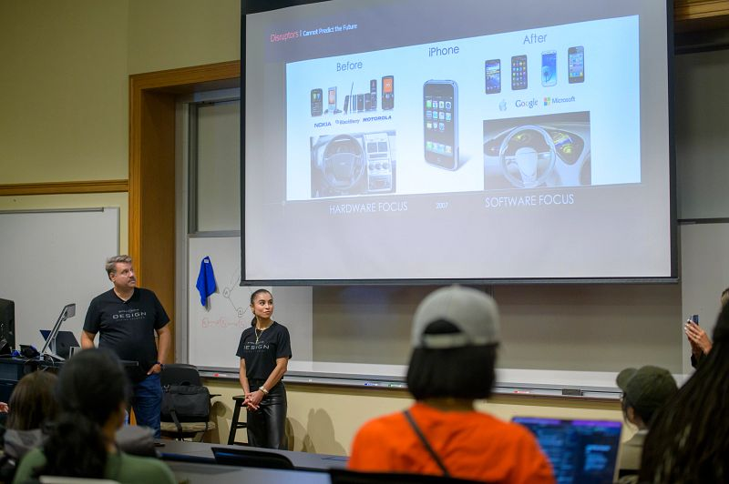

Bring Engaged Learning Skills Into Your Classroom
The ELO works with faculty to help students develop lasting professional skills, including teamwork, client communication, and project management, through workshops integrated into their courses.

Skills for Project Success
Technical skills alone aren't enough. ELO workshops help students manage clients, collaborate with teams, and stay on schedule.
Core Competency Areas
- Teamwork & Collaboration: team roles, conflict resolution, peer feedback.
- Client & Partner Engagement: client communication, project boundaries, deliverable handoff.
- Project Management: agile/phased planning, milestone tracking, project closure.
Bring a Workshop to Your Classroom
- Flexible timing: Sessions range from 20-minute briefings to 3-hour deep-dive workshops.
- Active learning: Every session includes hands-on exercises or scenario discussions.
- Request timing: Provide 2 weeks' notice before the semester or 1 month's notice during the semester.